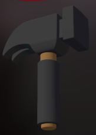
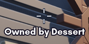
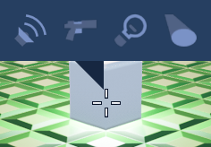
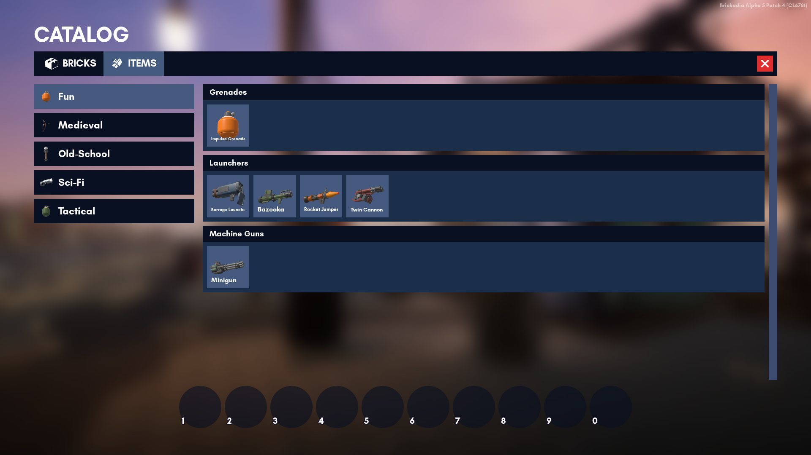
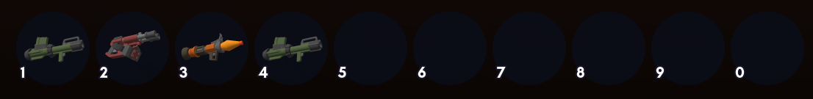

Brickadia
Brickadia is a multiplayer brick building game designed to handle massive constructions, with creative online gameplay.
This manual aims to teach you just about everything you need to know. It is open source, and you can contribute on GitHub if you find that it doesn't.
Client Installation
Brickadia has a launcher that will update the game for you, so you'll only need to install it once.
Windows
Download the Windows installer from the download page and run it.
Windows SmartScreen may say that "Windows protected your PC" because the installer has not been run by enough users. To continue, click More info, then Run anyway.
If you do not have the More info option, you will need to adjust a setting:
- Open the Windows Defender settings
- Go to App & browser control
- Under Check apps and files, select the Warn option instead of the Block option
- Run the installer again
You'll get a shortcut to start Brickadia on your desktop, and several others in your start menu.
Linux
The Vulkan renderer in the game is known to be unstable in its current state. If you're experiencing random bouts of crashing, you may want to try running the game in Proton.
Brickadia can be started from application entries.
Debian/Ubuntu
Download the brickadia-launcher.deb package from the download page.
On most distributions, you should be able to open it to install it. If not, run this command:
sudo apt install ~/Downloads/brickadia-launcher.deb
Other
An official package is not available for any other distributions yet, but you can download an archive of the launcher that should work on most Linux distributions, provided that you find the dependencies.
Download the brickadia-launcher.tar.xz archive from the download page. Extract it, and run the brickadia-launcher file to start the game.
The following is a list of dependencies based on the Debian package. The exact names may vary slightly by distro.
libbsd0
libc6
libcom-err2
libdbus-1-3
libexpat1
libfontconfig1
libfreetype6
libgcc1
libgcrypt20
libgl1
libglib2.0-0
libglvnd0
libglx0
libgpg-error0
libgssapi-krb5-2
libk5crypto3
libkeyutils1
libkrb5-3
libkrb5support0
liblz4-1
liblzma5
libpcre3
libpng16-16
libstdc++6
libsystemd0
libx11-6
libx11-xcb1
libxau6
libxcb-icccm4
libxcb-image0
libxcb-keysyms1
libxcb-randr0
libxcb-render-util0
libxcb-render0
libxcb-shape0
libxcb-shm0
libxcb-sync1
libxcb-util0 or libxcb-util1
libxcb-xfixes0
libxcb-xinerama0
libxcb-xkb1
libxcb1
libxdmcp6
libxext6
libxkbcommon-x11-0
libxkbcommon0
zlib1g
Installing Brickadia for use with Proton
Prerequisites
This will require an official version of Proton (downloadable from Steam (enable listing Tools in your Library/Games view) or from Valve's official repository), or any unofficial Proton fork you wish to use (GloriousEggroll, tkg, etc.).
You will also need Wine and winetricks installed, please see Wine's or your Linux distro's documentation on installing these.
!!! The guide will follow Arch Linux procedures for installing packages, please adapt these instructions to your Linux distribution. !!!
By default, Steam will place official Proton releases in ~/.local/share/Steam/steamapps/common, and looks for unofficial forks in ~/.steam/steam/compatibilitytools.d.
Commands denoted with a # will require root, those denoted with $ will be run as a normal user. sudo can be used to request root-level access on a per-command basis.
Setting things up
First, we need to install the prerequisite packages:
- wine
- winetricks
- curl
- steam (optional)
Note: The multilib repository must be enabled for wine, winetricks, and optionally steam. Enable this in /etc/pacman.conf.
# pacman -S wine winetricks
To keep things tidy, we need to create a folder for Brickadia to reside in, as well as the directory Proton needs to store its data.
$ mkdir -p ~/Games/Brickadia; cd ~/Games/Brickadia
Now we download the Brickadia launcher's installer
$ curl -o BrickadiaInstaller.exe "https://static.brickadia.com/launcher/1.4/BrickadiaInstaller.exe"
Installing the launcher
We first need to set an environment variable so that Proton knows where to store data. To make life a little easier for us, we'll also set where we have Proton installed.
$ export STEAM_COMPAT_DATA_PATH=$HOME/Games/Brickadia
$ export PROTON_DIR=$HOME/.local/share/Steam/steamapps/common/Proton\ 5.0
Then, we run the launcher installer using Proton
$ "$PROTON_DIR"/proton run BrickadiaInstaller.exe
The installer may seem to lock up after a minute while installing the VC2010 redistributable package. If this is the case, simply Ctrl-C in your terminal and re-run the above command. It may take 2-3 attempts, but should eventually pull through and finish installing.
Once the launcher installs, we need to re-install VC2010 manually (author note: I don't know if the x64 version installed by the installer is damaged or if the x86 version is supposed to be installed alongside it. winetricks takes care of both situations.)
Ignore any warnings that appear in the terminal, these are normal. Choose the repair option for the x64 installer.
$ WINEPREFIX=$STEAM_COMPAT_DATA_PATH/pfx winetricks vcrun2010
Running the game
After the launcher is installed and VC2010 is manually re-installed, the launcher should now be able to download the game's files and launch.
To make things easier, we'll put the directory the launcher was installed to in an environment variable.
$ export LAUNCHER_DIR=$STEAM_COMPAT_DATA_PATH/pfx/drive_c/Program\ Files/Brickadia/BrickadiaLauncher
Now we launch!
$ "$PROTON_DIR"/proton run "$LAUNCHER_DIR"/BrickadiaLauncher.exe
Scripts for one-click installing/running
Place these in the ~/Games/Brickadia folder you created in the beginning of the guide:
https://gist.github.com/TheBlackParrot/280b9f86dcc41085f9213b9ef75dcf55
Chapter 1: Tools
In Brickadia, there are several types of tools you can use to enhance your building experience. Currently, there are a total of 7 building tools in the game. The most prominent ones are the Placer, Painter and Hammer.
This is a summary of these tools, to view the full functionalities, please refer to the building tools' own pages.
- Placer - The Placer is a tool for placing your bricks. Self-explanatory.
- Painter - The Painter is a tool for changing the color or material of your bricks. Self-explanatory.
- Hammer - The Hammer is a tool for deleting your bricks.
- Resizer - The Resizer is a tool for resizing your bricks, provided that the brick is eligible for resizing. Self-explanatory.
- Selector - The Selector is a tool for selecting many bricks at once. Great for duplicating props.
- Applicator - The Applicator is a tool for applying components (lights, sounds, item spawns, etc...) to enhance or add functionality to your Brickadia builds.
- Outliner - The Outliner can only create circle guides as of now.
Building Features
Invisible Brick Indicator
When you have a building tool equipped, the game will show all invisible bricks with this effect:

Placer

The Placer is a tool for placing bricks.
Getting Started
Grab some bricks from the Catalog (default key is B). Once you've done that, you can just simply click to place a brick!
The placer also allows row dragging in a direction. Just hold left click and drag to a direction that you want to place bricks in a row.
Temporary bricks
You can copy bricks by middle clicking. This allows you to place the brick like any other.
Copying can be done in two ways:
- As a temporary brick. The copied brick type will remain selected in the quickbar until you switch to something else.
- As a new quickbar brick (hold ctrl). The copied brick type will be added to the end of your quickbar, like bricks chosen from within the catalog are.
Default Keybindings
| Action | Keybinding | Functionality |
|---|---|---|
| Add Brick as Temp Brick | Middle Click | Copies a brick and puts it into your Quickbar as a temporary brick. |
| Add Brick | Ctrl + Middle Click | Copies a brick and puts it into your Quickbar. |
Painter
The Painter is a tool for painting bricks.
Getting Started
To paint a brick, left click. You can hold left click to continue painting across bricks. You can paint both colors and materials.
To copy a color from a brick, use middle click on that brick.
This is the menu for the paint tool.
Colors and Materials
The colors that you are able to paint with can be changed in the Server Settings using a palette Preset.
Available materials include:
- Plastic (no slider)
- Glass
- Glow
- Metallic (no slider)
- Hologram
Default Keybindings
| Action | Keybinding | Functionality |
|---|---|---|
| Copy Color | Middle Click | Copies the color of a brick. |
| Scroll through Palette | Mouse wheel (vertically), E (horizontally) | Scrolls through the palette to select a color. |
| Change Material | Ctrl + E | Switch between scrolling through the colors or materials palette. |
| Change Material Slider | Ctrl + Mouse Wheel | Changes the material slider while scrolling through the materials palette. |
Hammer

The Hammer is a tool for removing bricks.
Getting Started
The Hammer is simple to use. Left click on the brick you want to remove. You can hold left click to remove bricks consecutively. It can also hit players.
Ownership Checking
To check ownership of a brick with the hammer, you can press middle click on a brick.

Default Keybindings
| Action | Keybinding | Functionality |
|---|---|---|
| Get Ownership | Middle Click | Gets ownership of a brick. |
Resizer
The Resizer is a tool for resizing bricks.

Getting Started
To resize a brick, simply click on a brick that you want to resize. Once you have done that, you can drag the handles to resize the brick in directions.

Brick Size Checking
To check the size of a brick with the resizer, you can press middle click on a brick.

Default Keybindings
| Action | Keybinding | Functionality |
|---|---|---|
| Get Brick Size | Middle Click (while resizer is equipped) | Gets the size of a brick. |
Selector

The Selector is a tool for selecting many bricks at once. Currently, you can delete many bricks, cut brick selections, copy and paste brick selections from this tool.
Getting Started
There are a few ways to select bricks with this tool. This includes:
- Clicking a brick with the tool and resizing the selection box with the handles.
- Clicking a brick with the tool, and then Ctrl-clicking another brick to expand the selection box.
For reference, this is what the selection box and its adjustment handles looks like.

You can also adjust the selection box more precisely (under the size of a stud) by holding the Fine Selection keybinding.
Deleting, Cutting, Copying and Pasting Selections
These actions with the selector all use the standard PC keybindings, although there's an additional keybinding to retain ownership when pasting bricks called Advanced Paste Selection.
Default Keybindings
| Action | Keybinding | Functionality |
|---|---|---|
| Copy Selection | Ctrl + C | Copies the selection in the selection box to the clipboard. |
| Paste Selection | Ctrl + V | Pastes the selection that's stored in the clipboard. Switches to the Placer tool. |
| Advanced Paste Selection | Ctrl Shift V | Does the same as Paste Selection, but also keeps the ownership of the selection intact. |
| Cut Selection | Ctrl + X | Cuts the selection in the selection box to the clipboard. |
| Delete Selection | Delete | Deletes everything in the selection box. |
| Fine Selection | Left Ctrl | Hold to resize the selection box precisely (under the size of a stud) while dragging the handles. |
Applicator

The Applicator is a tool for applying components to bricks. The tool is compatible with Presets.
The current default component list includes:
Getting Started
To get started, point at a brick of your choosing and left click with the Applicator tool equipped. The Applicator menu will appear.
When outside the Applicator menu, you can Ctrl + C on a brick to copy its properties. Once you have done that, you can Ctrl + V to paste those properties on other bricks
Brick Properties
1. Visibility
Visibility of the brick can be toggled by clicking the switch next to "Visible" in the Applicator menu.
2. Collision
Collision can be toggled in 3 levels (in order):
- Player collision
- Projectile collision (bullets, rockets, etc...)
- Interact collision (clicking, etc...)
They can be toggled by clicking the head, gun or hand buttons in the Applicator menu (in order).
Components
- To add a component, click the + button on the right of the Applicator menu.
- To remove a component, click the red trash can button on an existing component.
- To edit a component, click the "Edit" button on an existing component.
Probing with the Applicator
The Applicator can also let you view existing components of a brick outside the Applicator menu, as seen in the example below.

Default Keybindings
| Action | Keybinding | Functionality |
|---|---|---|
| Copy Properties | Ctrl + C | Copies properties and components from a brick to the clipboard. |
| Paste Properties | Ctrl + V | Pastes properties and components in the clipboard. |
Outliner

The Outliner can currently only make circle guides.
Getting Started
To use the Outliner, simply click and drag to generate a circle. To remove the circle, press Delete while equipping the Outliner.
To resize the circle, simply drag the top handle. To move the origin of the circle, simply drag the center of the handle.

Default Keybindings
| Action | Keybinding | Functionality |
|---|---|---|
| Delete Circle | Delete (while outliner tool is equipped) | Removes the circle guide. |
Chapter 2: Essential Features
Brickadia has many quality of life features to make a lot of common things in the game easier.
- Catalog - A user interface where you get your bricks or weapons from.
- Radial Menus - A user interface that you can get your tools or use emotes from.
- Presets - A feature that's almost everywhere. Very useful for palettes, graphics settings, and more.
- Quickbar - Your main quickbar in Brickadia.
Catalog
The catalog is where you get your bricks and weapons from.
Currently, you are able to browse:
Browsing the Catalog
To access the Catalog, simply press B. You can switch between bricks and weapons on the top bar.


To get an item from the Catalog, simply click one of the items you want or click and drag the item to the Quickbar. This will put it in the Quickbar.
To remove items from your Quickbar, right click on them or click and drag the item back to the Catalog.
To add a brick to the Quickbar as a temporary brick, middle click the brick you want in the Catalog. This exits the Catalog.
Radial Menus
There are two radial menus in the game.
Radial Emote Menu
To use an emote, hold the H key to open the menu and hover over the emote you want. From there, release the H key.
To stop using an emote (hugging and sitting), hover over the X icon.
Radial Tool Menu
To equip a tool, hold the G key to open the menu and hover over the tool you want. From there, release the G key.
Default Keybindings
| Action | Keybinding | Functionality |
|---|---|---|
| Hold to Emote | H | Opens the radial Emote menu. |
| Open Tool Pie Menu | G | Opens the radial Tool menu. |
Presets
In Brickadia, presets are everywhere.
Presets can be saved for:
- Avatars
- Palettes
- Components
- Minigames
- Environment configurations
- All settings
Presets Menu
The Presets menu is accessible at any given point when it's possible to save configurations as presets.
Click any preset to load it.

When you hover over a preset in this menu, 3 options will show.

Here's a list of the options (in order):
- Rename - Click this button to rename the preset.
- Overwrite - Click this yellow button to overwrite the preset with your current configuration.
- Delete - Click this red button to remove the preset.
Quickbar
The Quickbar is where you equip your current brick or item.
How to use the Quickbar
To add an item to your Quickbar, browse the Catalog and from there, click any item you want to put it in the Quickbar.
To remove an item from your Quickbar, right-click the item in the Quickbar.
To switch the Quickbar mode in gameplay, press Ctrl + Q to switch between items and bricks.
The quick bar in brick mode:

The Quickbar in item mode:

This can be configured through Minigames.
Default Keybindings
| Action | Keybinding | Functionality |
|---|---|---|
| Slot 1-10 | 1 - 0 | Equips the item in slot 1 - 10. |
| Next Slot | Mouse Wheel Up | Cycles to the next slot in the Quickbar. |
| Previous Slot | Mouse Wheel Down | Cycles to the previous slot in the Quickbar. |
| Switch Mode | Ctrl Q | Switches the Quickbar between bricks and items. |
Chapter 3: Components
In Brickadia, components are very important for enhancing your builds. In fact, there are many of them placed throughout builds!
Here's a summary of each component and what each one does:
- Spot Light - Places a rotatable and adjustable spotlight.
- Point Light - Places an adjustable point light.
- Audio - Adds sound to a brick.
- Item Spawn - Spawns items on a brick.
Spot Light


This component adds a spotlight to a brick.

Tips for this Component
- Spot lights rotate with the placer's ghost preview, so their Rotation settings aren't affected in any way.
- Do not overlap spot lights too much as this can cause performance issues.
- If the Inner Cone Angle is higher than the Outer Cone Angle, the spotlight will produce a result like this:

Point Light

This component adds a point light to a brick.

Tips for this Component
- You can use small radius point lights to light up signs, glowing crystals, neon lights, etc.
- Point lights without shadows can cause undesired light leaks. It is advisable to turn down the light radius when this happens.

- Do not overlap point lights too much as this can cause performance issues.
- Point light shadows are very intensive and can impact performance massively in large amounts, so use them carefully.
- It is important to use the Cast Shadows option sparsely or when it's necessary. Misuse of this can lead to your point lights casting abnormal shadows like this.
Audio

This component can add sounds or music to bricks.

Tips for this Component
- It is NOT recommended to use this component as a way to add loud sounds in public servers unless necessary, as this may disturb players or lead to server bans.
- You can use the Pitch Multiplier as a way to create a variety of sounds.
Item Spawn


This component can spawn weapons and adjust their pick-up appearance. Compatible with Minigames.

Tips for this Component
- Item spawns can be used as a way to decorate your build using the rotation and offset settings. Here is an example:

- Item spawns can be used in deathmatch maps as a way to add health pick-ups.
Chapter 4: Minigames
- Deathmatch - Deathmatch
- Bricktionary - Bricktionary
- Sandbox - Sandbox
Chapter 5: Hosting Servers
In Brickadia, servers allow you to connect with other players. If you are interested in hosting a server for other players, read on!
The two types of servers you will see:
- Client Hosting - Hosted through the in game client, often hosted in short bursts on a home machine.
- Dedicated Server - Hosted through a command-line interface, often on another machine that is up for longer periods of time.
Client Hosting Setup
Dedicated Server
Brickadia allows you to host a server on a dedicated machine. You may want to do this if:
- You have a VPS/bare metal server spare
- You want to avoid hosting a server on your own machine or home network
- You want to offload the server processing required onto another machine
Requirements
Before you start this guide, you will need the following:
- A machine that is running
WindowsorLinux
- For the best reliability, we recommend getting a VPS or a bare metal machine from a server rental company. If you are home hosting off an old laptop, your results may vary.
- A way to connect to that machine, either through
SSHor with a keyboard & monitor.
Guides
Brickadia Community
Brickadia Community contains a collection of tools made for Brickadia by the community, some of which relate to dedicated servers. You may be interested in omegga, as it allows you to create & use plugins to extend Brickadia servers.
Linux Setup
This guide assumes you are hosting a server on a Debian based distro, on a x86-64 CPU1
You can use any linux distro you want to host Brickadia, you will just need to adjust the commands to what your distro provides by default.
New User
Its recommend installing Brickadia onto a user that isn't root2.
sudo adduser brickadia
After running this command, you will get the following (shortend) output:
Creating home directory `/home/brickadia' ...
New password:
Enter the users new password, and just press 'ENTER' to skip the questions adduser asks you.
To access the user, you must use the command:
su - brickadia
From now on, this guide will assume you are logged in as brickadia.
Installation
Brickadia does not offer a separate binary for servers, instead you are required to download the launcher.
Head on over to Brickadia download page and copy the link to Linux(Other) .tar.xz archive.
On your server, donwload the archive with:
wget https://static.brickadia.com/launcher/[VERSION]/brickadia-launcher.tar.xz
This will download brickadia-launcher.tar.xz. Next you will need to extract the launcher from tar.
tar -xf brickadia-launcher.tar.xz && cd brickadia-launcher
Inside the new brickadia-launcher, run the following command to download the game:
./brickadia-launcher --server
Help, I just got a Permission denied error
If you get the following error: ./brickadia-launcher: Permission denied, you will need to run:
chmod +x ./brickadia-launcher
Once the game has downloaded, the launcher will start the server. You should close the server (ctrl + c) and move onto the next step.
Port Forwarding
Read portforward.brickadia.dev, as this will always contain the latest ports you will want to port forward.
We will be using ufw to port forward, as most distros tend to include it out of the box.
sudo ufw allow 7777/udp
Startup
Brickadia servers require authentication before they can appear on the master list. To do so, you must pass your username and password at least once when launching the server.3
./brickadia-launcher --server -- -User=Username -Password="password"
After this, you do not need to pass your username or password as the file is cached in ~/.config/Epic/Brickadia/Saved/Auth.
Assuming all went well, you should now be able to join your server. You can configure your game once you have joined it, by pressing Esc and pressing Edit Game.
Misc
Files of importance:
- Configs:
~/.config/Epic/Brickadia/ - Install:
~/.local/share/brickadia-launcher/
Commands:
quit- Quit the game
Arm is not supported officially, however box64 has been known to work with Brickadia.
Its good practice in linux not to run applications under root unless they require that level of access to the system. There is nothing preventing you from doing so.
The command includes a space at the start, as it tells bash to not save it in ~/.bash_history
Users
If you encounter any of these specimens, you may need to exercise caution.
mizuno
Occasionally, you will see a player named mizuno. If you see him, leave the game, as you may already be in danger.
rlcbm
Please be advised that you will not be left unaware of the time.
Zeblote
A small percentile of users report sightings of a mysterious entity known only as Zeblote. Reports describe him judging the uses of bricks in the player's server, often deeming them terrible. Many users report symptoms of severe headaches and nausea after being informed of this. Please adjust your use of bricks accordingly.